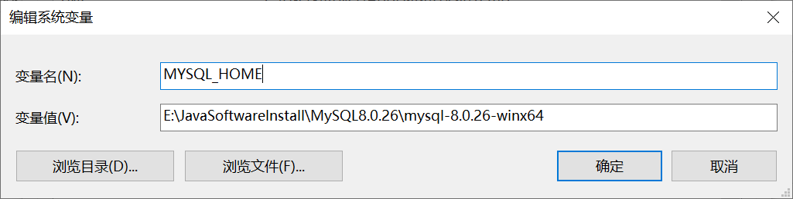
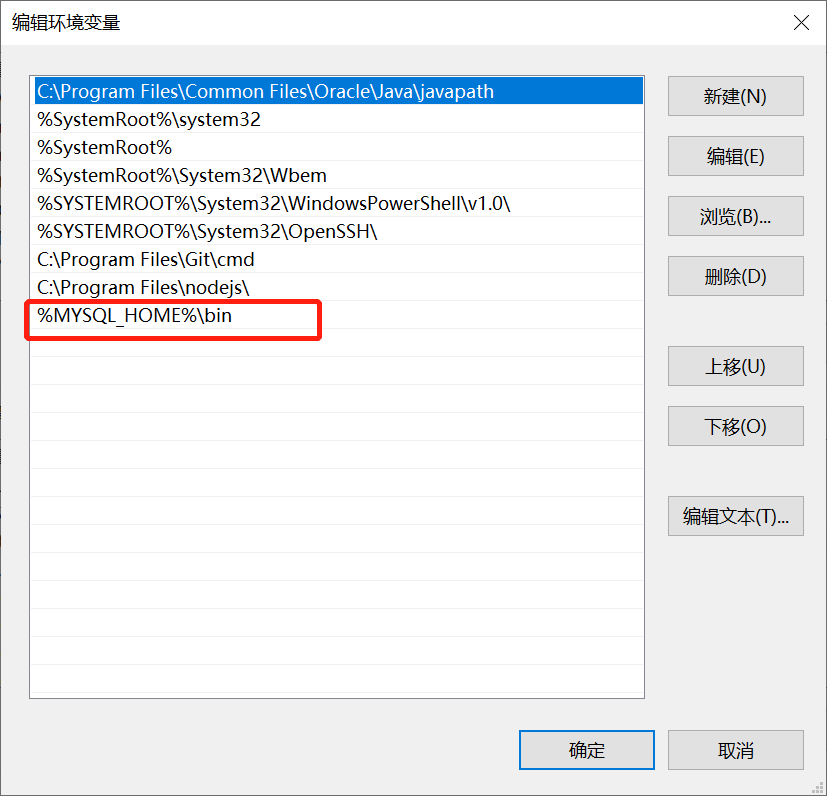
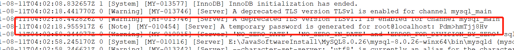
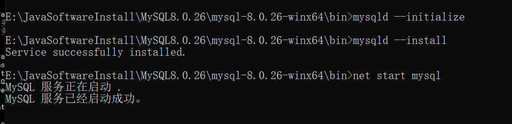

Mysql8.0.26解压版安装教程及其问题解决
前言
今天重装了系统，但是在重新安装MySQL时候，遇到了一些问题。时间太久了，以往的东西总是偷偷就不见了。所以花费了点时间，记录一下今天遇到的问题，以及安装步骤。
ps:我本人不太喜欢官方的exe安装程序，所以一般都是选择解压版的。如果读者之前从来没安装过MySQL，建议下载exe安装程序，安装嗷。会方便快捷很多。
正文
安装步骤
-
[MySQL8.0.26解压版下载地址](MySQL :: Download MySQL Community Server)
-
下载MySQL解压版，链接在上面
-
进入解压的目录当中
-
创建一个名为my.ini的文件
-
修改my.ini文件
1
2
3
4
5
6
7
8
9
10
11
12
13
14
15
16
17
18
19
[mysql]
# 设置mysql客户端默认字符集
default-character-set=utf8
[mysqld]
# 设置3306端口
port = 3306
# 设置mysql的安装目录
basedir = E:\\JavaSoftwareInstall\\MySQL8.0.26\\mysql-8.0.26-winx64\\
# 设置mysql数据库的数据的存放目录
datadir = E:\\JavaSoftwareInstall\\MySQL8.0.26\\mysql-8.0.26-winx64\\data
# 允许最大连接数
max_connections=20
# 服务端使用的字符集默认为8比特编码的latin1字符集
character-set-server=utf8
# 创建新表时将使用的默认存储引擎
default-storage-engine=INNODB
# 创建模式
sql_mode = NO_ENGINE_SUBSTITUTION,STRICT_TRANS_TABLES- 这里的basedir是指向你MySQL的目录位置，记得在windows下，目录要双斜杠"\\"
-
-
配置MySQL的环境变量
  -
用管理员身份运行cmd
-
在cmd中切换到mysql的bin目录
-
执行mysqld --initialize命令，会生成一个新目录data，查看里面后缀为.err文件，可以看到随机生成的root用户的密码
 -
执行mysqld --install命令，安装mysqld服务
-
执行net start mysql命令，启动mysql服务
 -
执行mysql -u root -p命令，登录mysql数据库
-
-
执行下面的sql命令，重新设置密码
1
alter user 'root'@'localhost' identified with mysql_native_password by '新密码'
可能遇到的问题及其解决办法
启动服务的时候找不到指定文件
- 可能的原因是，你在安装的时候，没有进入mysql的bin目录进行安装。所以mysql服务指向的目录地址不存在。
解决办法
彻底删除前面安装的mysql服务，再重新进入mysql的bin目录，重新安装mysql服务。
1 | 删除服务命令 |
特别的：如果仅用命令无法重新安装mysql服务的话。我们就需要进入注册表中，手动删除。
-
在cmd中的，输入regedit进入注册表
-
分别删除一下目录的MySQL的文件夹
-
HKEY_LOCAL_MACHINE\SYSTEM\ControlSet001\Services\Eventlog\Application\MySQL 目录删除
-
HKEY_LOCAL_MACHINE\SYSTEM\ControlSet002\Services\Eventlog\Application\MySQL 目录删除
-
HKEY_LOCAL_MACHINE\SYSTEM\CurrentControlSet\Services\Eventlog\Application\MySQL 目录删除
-
HKEY_LOCAL_MACHINE\SYSTEM\CurrentControlSet\Services\MySQL
注册表中的ControlSet001,ControlSet002,不一定是001和002,可能是ControlSet005、006之类,删除的时候,都删除就可以
-
启动的服务的时候，显示拒绝访问，错误5
- 一种情况是单纯的用户权限不够，用管理员身份打开cmd，启动服务就好
- 另一种情况，用管理员身份打开cmd也还是显示拒绝访问。
- 这个情况，困扰我挺久。后来我直接删除MySQL，一切重新安装。问题得到解决。